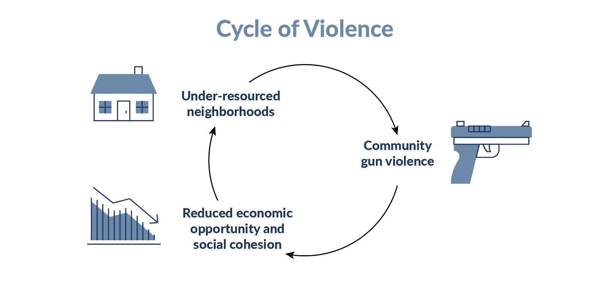

Gun control is the set of laws or policies that regulate the manufacture, sale, transfer, possession, modification, or use of firearms by civilians. Successfully implemented gun regulation and violence prevention projects can stop the violence. As a first step, states should recognize firearm violence as a threat to people’s human rights, in particular their rights to life, to physical integrity and security of person, and to health.
Gun Regulations.
States can set up some basic systems to regulate how individuals can own and use firearms and ammunition to prevent them from abusing human rights with guns. A firearms license should be subject to certain criteria being met. For example, the applicant should undergo a comprehensive background check to identify any risk factors, such as prior criminal record – especially for violent behaviour in the home or community; history of gender-based, sexual or domestic violence; and history of problematic use of drugs/alcohol, emotional issues, mental health conditions and other circumstances which heighten the risks of the harm to self or others using firearms. Gun licenses should be time-limited and training on how to use the weapon should be mandatory.
To avoid fuelling the illicit trade in and possession of firearms, states must take-charge to make sure that all stocks of firearms and related ammunition, including those for use by military and law enforcement personnel, as well as those held by dealers, are kept under lock and key.
Helping communities with lots of gun violence.
Where patterns of firearm possession and use lead to insecurity, states have the obligation to protect life and ensure security for all through human rights-compliant law enforcement, community interventions, and tightening of regulations on firearms possession and use.
 Guns create a cycle of violcence.Initiatives should focus on those at most risk of perpetrating and being victims of gun violence – often young males growing up in deprived urban neighbourhoods. Long-term, adequately funded, evidence-based projects, tailored towards specific social, economic and cultural contexts, and working in partnership with the affected communities, are needed to achieve sustained reductions in firearm violence.
Information by Amnesty International's "Gun Violence"